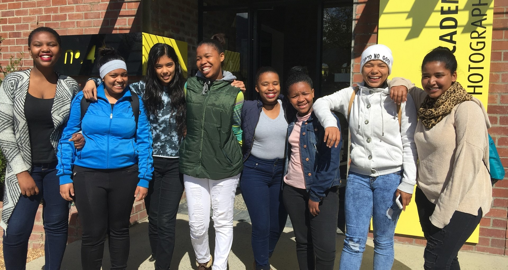
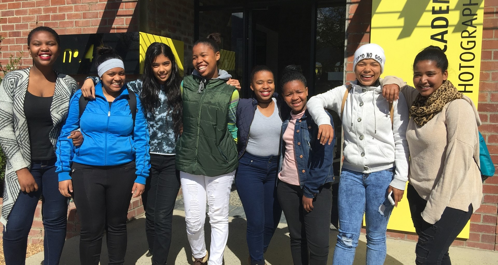
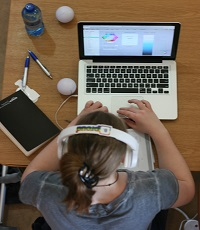
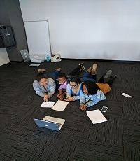

We want to see young women empowered to leverage technology for social innovation, so that there is greater diversity in the African tech industry. We want high school girls to have an enabling environment to imagine and create new technology that is relevant to a South African context.
|  |  |
| Coding | Communication | Problem Solving |
| Learn how to build your own websites using HTML, CSS, JavaScript and JQuery. Go on to explore exciting modules from game development to user experience design. | Learn how to pitch ideas, represent yourself online, communicate professionally and work with online collaboration tools. | Apply your coding skills to issues you are interested in. You will learn how to tackle complex problems using the design thinking process. |
Over the past 3 years, Code for Cape Town has reached over 600 young women with coding and social innovation. Not only have they been exposed to coding but they have also done careers and life skills courses, design thinking workshops and social innovation projects to address local challenges.
...
 |
Emma DicksFounder and DirectorEmma is passionate about providing high quality education that enables young people to bring innovative ideas to life and play an active role in South Africa’s economy. |
Andrea PetersenOperations LeadAndrea thrives on seeing key players in the Code4CT ecosystem discover how they can make the greatest impact. |
|
 |
Tegan CrousProgram LeadTegan heads up the high school program. She is spurred on by a heart for people and seeing them pursue their potential in a safe, fun and nurturing environment. |
Tracy-Anne SikenjanaLeadership Program ManagerTracy joined the Code4CT program in 2015 and then matriculated from Rustenburg Girls’ High in 2016. She decided to intern with Code4CT to give back to an organisation that had a large impact on her personal growth and development. |
0 |
0 |
0 |
0 |
Cups of coffee |
Number of girls |
Projects completed |
Hours of coding |
We equip high potential female learners with the coding, problem solving and life skills that will allow them to leverage technology to contribute meaningfully to South Africa’s innovation system. The program exposes young women to how technology can be used for social innovation and helps them navigate critical study decisions.